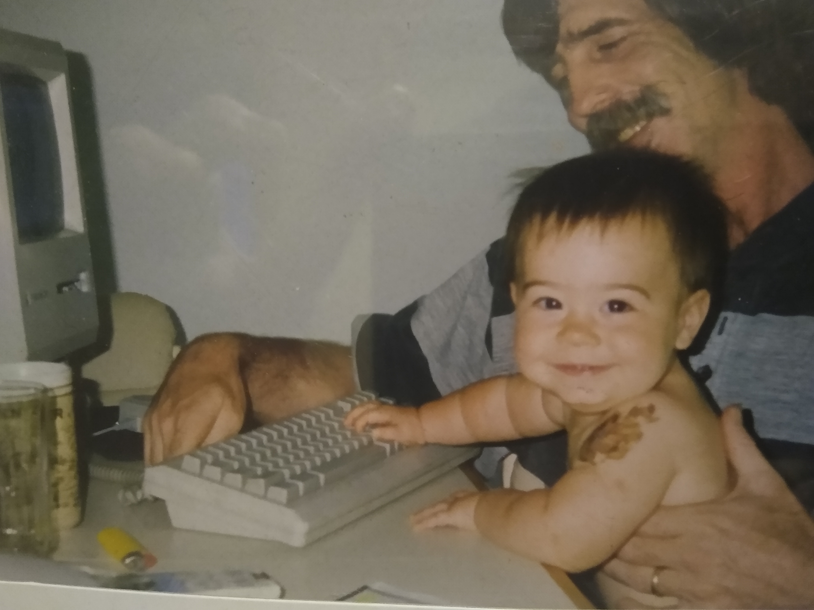
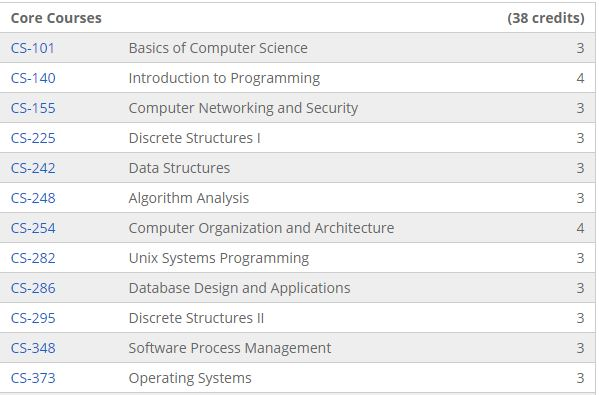
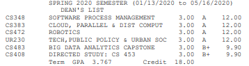
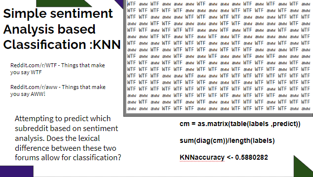
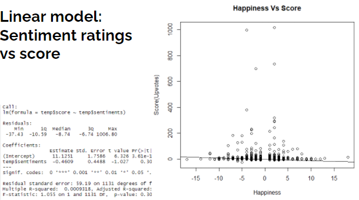
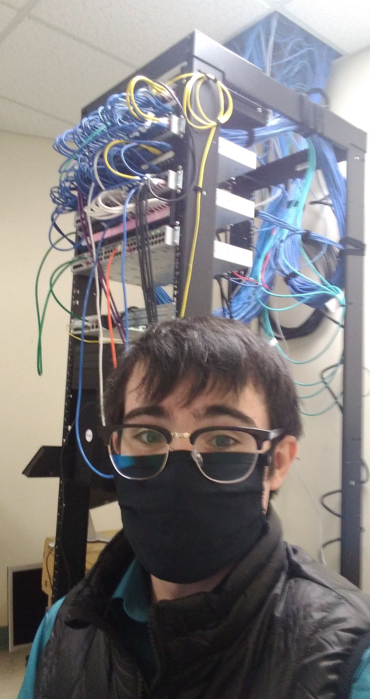

My dad is a database engineer. He helped spark my interest in technology by showing me how to make simple procedural programs. When I was 11 I made simple text adventure games and would ask my family members to play.

I spent most of my teenage years on the computer. Plenty of my time was spent on video games, but I learned significant troubleshooting skills trying to install game emulators, pirate games, and crack the administrator account restricting my computer to a reasonable schedule. I ran a for-profit minecraft server (Logo banner pictured below.) with friends where I created custom Java plugins and an associated webpage. Lua programming for ingame robotics was fascinating. After graduating highschool I was confident I wanted a job in software engineering.
In my gap year I delivered pizzas and saved money for college. I begun to work on making websites. I was starting from scratch and struggled my way through creating basic HTML/CSS pages. I attempted to run both WAMP and LAMP stack local servers but never felt safe serving webpages from my home.
College was a fantastic opportinity to learn about technology. My experience with the Worcester State computer science major was positive. The university had a software engineering focused courseload; Java, C, data structures. As well I took classes in web design, robotics, cloud computing, data mining, large scale data science. For brevity, I won't write everything I learned about tech in college. Each course was at least 3 months. Data Science was particularly rigourus. It was a Java focused course and very programming heavy. We did interesting things like implement all the functions avalible to a stack with heap functions, and vice versa. Within speed and memory constraints. I even had to memorize how to invert binary trees on paper, perform various types of tree balancing and SO MUCH MORE.

I found the time to work on my web development skills afterschool. I pieced together dozens of websites with parts found on the internet. All of which were far too mishmashed to be maintainable. I switched to a Wordpress solution with a Veerotech managed backend. This was a much easier place to start, and let me get a grasp on nameservers, domains, database management, adding custom PHP/JS, ect. The general skills I was too overwhelmed attempting to full stack to really grasp. I made a few service-advertising webpages for friends, including a fully functional ecommerce website.

However I really did not like Wordpress. The files always seemed so bloated and I didn't really feel in control of what I was making. I wanted to make websites I really understood every part of. Programming seemed to be a better long term investment.
My final year of college was very difficult. I limited delivering pizzas to only fridays and stopped making websites to make time for the six classes I was taking. I really didn't want to fail anything and be required to take another semester.
I had to get permissions to "overload" and take greater than 12 credits. As well I got permission to take CS-453 Data Mining as a directed study alongside my Big Data Analytics Capstone.
This allowed me to graduate a bit early, but all of these classes were difficult. I'd estimate my average sleep per night was about 4 hours. I learned an incredible amount about large scale data science in a short timespan.
The capstone class alone had multiple projects, and required over a dozen datacamp courses to be completed, alongside smaller assignments and reading. 
My capstone project was a few data science subprojects centered around some truly big data. The reddit comments from 2015 dataset. Over 1.5 million instances of 22 attributes, totaling 30gb in space; And this dataset was only availible as SQLITE.
I wanted to pick something difficult and new so I decided to GloVe word vector sentiment analysis on the dataset, as well as regular tokenize-and-classify style sentiment analysis.
The real difficulty was cleaning and handling this dataset. Obviously nothing could be done manually, most things could not even be done with traditional software or on my local system as the dataset was simply too large to handle locally given time constraints.
I used AWS to handle the data analysis. Some parts were done in Python, some in R. One major difficulty was cleaning the dataset properly. Due to the number of programming subreddits; Code was often found inside the dataset. In the end I managed to do sentiment analysis and prediciton on the dataset, but only got GloVe style analysis done on a smaller subset.
After tokenizing, removing stopwords, doing a lexical comparison, and running a custom KNN style algorithm I created a model that would predict if a given comment was in the subreddit "Aww" a forum for cute pictures of animals or "WTF" a forum for pictures that make you say "WTF" based on the comments sentiment. Overall the success rate was about 60%, comments rated higher on my niceness attribute were more likley on the "Aww" subreddit.

Here's a linear model I created showing the relationship between an instance comment's sentiment and its score. Notice the slight trend towards negative comments being higher scoring. As well most extreme comments do not score well, but there are also fewer extremly sentimented comments.

It was a difficult final semester with many sleepless nights. I was very glad to be finished with college.
A friend Joshua wanted to create a decentralized investment application on the blockchain aeternity. After a few weeks rest I started in on this project. Blockchain, decentralization, and the programming language Sophia were all new to me. I dove into this project repeatedly with only moderate success. It was not a well documented language in comparison to anything I'd used before. After a few dozen attempts I had a blockchain virtualized locally via "aeproject" as an enviornment to test in. The Sophia code handled

- To be continued -